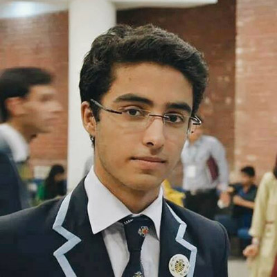

Fiza Shahzad

Bilal Shafi
Greetings Delegates! It is with immense pleasure that we, Bilal Shafi Sheikh, and Fiza Shahzad, welcome you to the Disarmament and International Security Committee at BMIDC '15.
If you expected us to now tell you that you will be in safe hands, you have been misled. Firstly, we refuse to be that clichéd and mainstream, and secondly, we cannot promise that, people tend to get hurt around us.
Jokes aside, we look forward to meeting you all, getting to know you and chairing what promises to be the most exciting and competitive committee at BMIDC this year. We expect delegates to present unique and viable solutions which are able to address the multiple dimensions of the topic at hand. The delegates are expected to be well researched and fully aware of their country stances. You will be evaluated on your consistency in the committee sessions, the content of your speeches, your lobbying skills and the quality of your paperwork. Passionate speeches, witty retorts, thinking on your feet, impromptu masterclasses, diplomacy, and control of committee dynamics are all qualities that are highly appreciated among delegates aspiring to win an award. Remember that the quality of your arguments, your delivery skills, and your diplomatic abilities (which extend beyond being nice and compromising) are all vital to your survival in this committee. However intimidating this might seem, we urge you all to not let the competition get to your heads. Remember to keep the fun alive and to make this a memorable learning experience.
By the way, we're huge suckers for free food (hint hint). Plus, brownie points if you listen to our kind of amazing (read: everything from depressingly sentimental to heavy metal and hard/classic rock to whacky/Bollywood) music. Also please excuse us for any emotional volatility we might display during committee sessions, or if we scream at you, or if Bilal makes you do placard jacks. We can’t help it really. Honest.
Good luck and Godspeed!
PS. Just a heads up, Fiza's awesome.
PPS. Bilal totally didn't write the PS.